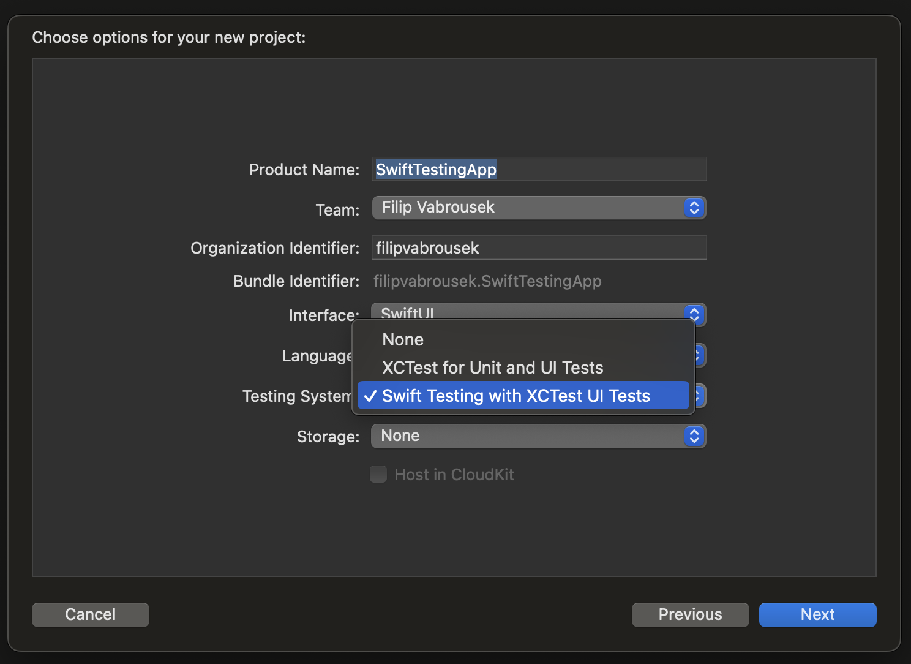

11/06/2024
In this tutorial we are going to create gradual blur effect using the new textEffect modifier in iOS 18.
First, we need to define the text layout. We do this by extending the Text.Layout structure and adding two computed properties: flattenedRuns and flattenedRunSlices. These properties will allow us to access the individual runs and slices of the text layout.
extension Text.Layout {
var flattenedRuns: some RandomAccessCollection {
self.flatMap { line in
line
}
}
var flattenedRunSlices: some RandomAccessCollection {
flattenedRuns.flatMap(\.self)
}
}
Next, we create a new structure called EmphasisAttribute that conforms to the TextAttribute protocol. This attribute will be used to mark the text that we want to apply the effect to.
struct EmphasisAttribute: TextAttribute {}
Now, we define the main effect. We create a new structure called Effect that conforms to the TextRenderer and Animatable protocols. This structure will be responsible for rendering the text with the desired effect.
struct Effect: TextRenderer, Animatable {
var elapsedTime: TimeInterval
var elementDuration: TimeInterval
var totalDuration: TimeInterval
var animatableData: Double {
get {elapsedTime}
set {elapsedTime = newValue}
}
init(elapsedTime: TimeInterval, totalDuration: TimeInterval, elementDuration: Double = 0.4) {
self.elapsedTime = min(elapsedTime, totalDuration)
self.totalDuration = min(elementDuration, totalDuration)
self.elementDuration = elementDuration
}
// draw method from step 4 comes here
}
In the Effect structure, we implement the draw method. This method takes a Text.Layout and a reference to a GraphicsContext, and draws the text with the effect. If the run has the EmphasisAttribute, we draw each slice individually with the effect. Otherwise, we draw the run normally.
func draw(layout: Text.Layout, in ctx: inout GraphicsContext) {
for run in layout.flattenedRuns {
if run[EmphasisAttribute.self] != nil {
let delay = 0.03 //elementDelay(count: run.count)
for (index, slice) in run.enumerated() {
let timeOffset = TimeInterval(index) * delay
let elementTime = max(0, min(elapsedTime - timeOffset, elementDuration))
var copy = ctx
draw(slice, at: elementTime, in: ©)
}
} else {
var copy = ctx
copy.opacity = UnitCurve.easeIn.value(at: elapsedTime / 0.2)
copy.draw(run)
}
}
}
Next, we create a new structure called TextTransition that conforms to the Transition protocol. This structure will be responsible for transitioning the text from one state to another.
struct TextTransition: Transition {
static var properties: TransitionProperties {
TransitionProperties(hasMotion: true)
}
func body(content: Content, phase: TransitionPhase) -> some View {
let duration = 0.9
let elapsedTime = phase.isIdentity ? duration : 0
let renderer = Effect(elapsedTime: elapsedTime, totalDuration: duration)
content.transaction { transaction in
if !transaction.disablesAnimations {
transaction.animation = .linear(duration: duration)
}
} body: { view in
view.textRenderer(renderer)
}
}
}
Finally, we create a new structure called EffectView that conforms to the View protocol. This view displays the text with the effect. We use a Slider to control the progress of the blur effect on our Text
struct EffectView: View {
let visualEffects = Text("SwiftUI")
.customAttribute(EmphasisAttribute())
.foregroundStyle(.green)
.bold()
@State var time: TimeInterval = 0.3
var body: some View {
VStack {
Slider(value: $time, in: 0 ... 0.8)
Text("Filip loves \(visualEffects)")
.font(.system(.title, design: .rounded, weight: .semibold))
.frame(width: 250)
.foregroundStyle(.gray)
.textRenderer(Effect(elapsedTime: time, totalDuration: 0.8))
Spacer()
}.multilineTextAlignment(.center)
.padding()
}
}
11/06/2024
Apple has also announced Swift Testing framework at WWDC24. You can check the option "Swift Testing with XCTest UI Tests"
To begin, open the file SwiftTestingAppTests.swift and write the code in the snippet.
You will see struct named after your project, and function annotated with new @Test annotation. We can then define a test case using the new #expect makro.
import Testing
@testable import SwiftTestingApp
struct SwiftTestingAppTests {
@Test func testExample() async throws {
let a = 2
let result = a + a
#expect(result == 4)
}
}
As I wrote here, back in February I developed an open-source Swift library called Bone.swift. It can help you understand SwiftUI internals, by using the bone modifier. It inspect underlying SwiftUI views like UpdateCoalescingCollection view that powers SwiftUI List on iOS and iPadOS. It can also inspect view hiearchy for pure SwiftUI elements like Text that are drawn on SwiftUI's CGDrawingVew.
The output will be written to text file and backing views and layers will be shown in the interactive view over your app's UI.
List {
Text("Bone")
}
.bone(into: "output.txt")
And if you are wondering, the implementation of these elements is the same on iOS 18.
Enjoy the rest of WWDC24!